什么是 Canvas
canvas 是 HTML5 提供的一个用于展示绘图效果的标签. canvas 原意画布, 帆布. 在 HTML 页面中用于展示绘图效果. 最早 canvas 是苹果提出的一个方案, 今天已经在大多数浏览器中实现.
|
|
canvas 的基本用法
基本语法
|
|
- 使用 canvas 标签, 即可在页面中开辟一格区域. 可以设置其 width 和 height 设置该区域的尺寸.
- 默认 canvas 的宽高为 300 和 150.
- 不要使用 CSS 的方式设置宽高, 应该使用 HTML 属性.
- 如果浏览器不支持 canvas 标签, 那么就会将其解释为 div 标签. 因此常常在 canvas 中嵌入文本, 以提示用户浏览器的能力.
- canvas 的兼容性非常强, 只要支持该标签的, 基本功能都一样, 因此不用考虑兼容性问题.
- canvas 本身不能绘图. 是使用 JavaScript 来完成绘图. canvas 对象提供了各种绘图用的 api.
canvas 的使用领域
canvas 的使用领域很多:
- 游戏
- 可视化数据(重点)
- banner 广告
- 多媒体
- 未来
- 模拟仿真
- 远程操作
- 图形编辑
我们的课程目标
- 不是为了做游戏
- 学会使用基本的 canvas api, 使用 canvas 可以完成简单的绘图
- 实现数据的可视化
基本绘图
基本绘图方法
绘图步骤
- 获得
canvas对象. - 调用
getContext方法, 提供字符串参数'2d'. - 该方法返回
CanvasRenderingContext2D类型的对象. 该对象提供基本的绘图命令. - 使用
CanvasRenderingContext2D对象提供的方法进行绘图. - 基本绘图命令
- 设置开始绘图的位置:
context.moveTo( x, y ). - 设置直线到的位置:
context.lineTo( x, y ). - 描边绘制:
context.stroke(). - 填充绘制:
context.fill(). - 闭合路径:
context.closePath().
- 设置开始绘图的位置:
01-绘制基本线
|
|
运行结果为
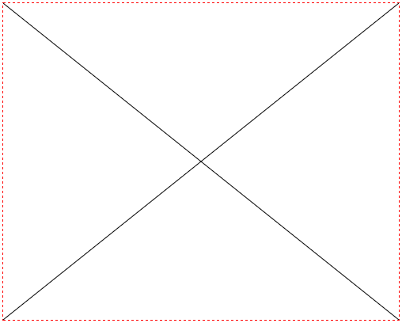
计算机直角坐标系
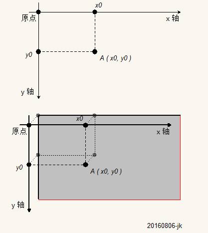
代码分析
- 需要绘图就需要有
canvas标签, 该标签用于展示图像. canvas的宽高不要使用 CSS 来设置, 会有拉伸的问题. 应该直接使用属性设置.- 但是
canvas只是展示图像的标签, 它没有绘图的能力. 需要使用canvas的上下文工具来实现绘图. - 使用
canvas.getContext( '2d' )可以获得绘图工具, 该工具是CanvasRenderingContext2D类型的对象. - 需要绘图, 首选设置绘图的起点.
- 使用
canvas绘图, 需要主要的是他主张先描点, 再连线绘制效果. - 因此需要首先设置起点, 然后在起点的基础上描述其他需要的点.
- 使用
CanvasRenderingContext2D.moveTo( x, y )方法设置起点.- 其中 x, y 表示的是在坐标系中的位置.
- 使用
- 使用
CanvasRenderingContext2D.lineTo( x, y )来描述绘制直线的下一个点. 依次类推可以描述多个点. - 描点结束后, 需要使用
CanvasRenderingContext2D.stroke()方法来连线. 开可以显示出效果.
getContext 方法
语法: Canvas.getContext( typeStr )
描述:
- 该方法用于绘制上下文工具.
- 如果是绘制平面图形使用
'2d'作为参数, 如果绘制立体图形使用'webgl'. - 使用
'2d'返回CanvasRenderingContext2D类型的对象. - 使用
'webgl'返回WebGLRenderingContext类型的对象.
moveTo 方法
语法: CanvasRenderingContext2D.moveTo( x, y )
描述:
- 该方法用于设置绘制起点.
- 其中参数 x, y 表示在坐标系中的位置, 分别是 x 坐标与 y 坐标.
lineTo 方法
语法: CanvasRenderingContext2D.lineTo( x, y )
描述:
- 该方法用于设置需要绘制直线的另一个点. 最终描边后会连线当前点和方法参数描述的点.
- 其中参数 x, y 表示在坐标系中的位置, 分别是 x 坐标与 y 坐标.
stroke 方法
语法: CanvasRenderingContext2D.stroke()
描述: 该方法用于连线, 将描述的所有点按照指定顺序连接起来.
结论
- 绘图先要获得上下文, 即绘图工具
- 绘图需要设置开始的坐标
- 绘图是先描点, 然后一个一个依次连线
- 依次绘图只能绘制单一样式( 色彩等 )
直线图形
分别绘制下面的案例:
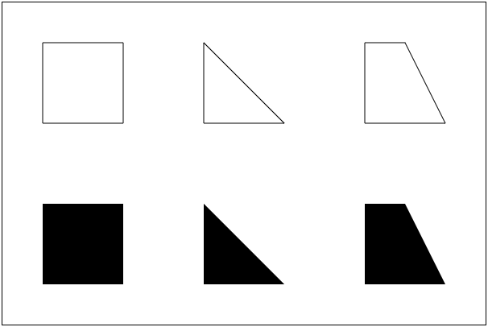
- 绘制直线计算坐标.
- 描边调用
CanvasRenderingContext2D.stroke()方法. - 填充使用
CanvasRenderingContext2D.fill()方法.
fill 方法
语法: CanvasRenderingContext2D.fill()
描述: 该方法会按照描绘的点的路径来填充图形. 默认是黑色.
非零环绕原则
绘制下面的图
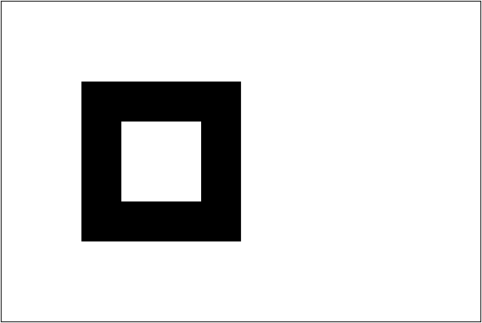
填充满足非零环绕数原则
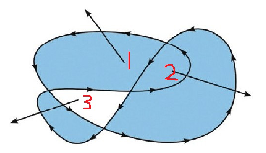
说明:
- 在
canvas中使用各种方法描点实际上描述的是一个称为路径( path )的东西. - 在
canvas绘图中, 所有描述的东西都是路径, 只有最后填充或描边的时候才会显示出效果. - 每一个路径都是一个状态.
练习: 绘制下面图形
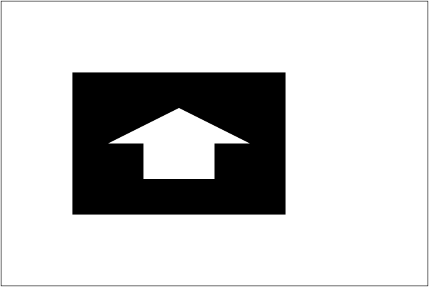
闭合路径
closePath 方法
语法: CanvasRenderingContext2D.closePath()
描述: 使用该方法可以将最后一个描点与最开始的描点自动连接起来.
案例
|
|
结果为:
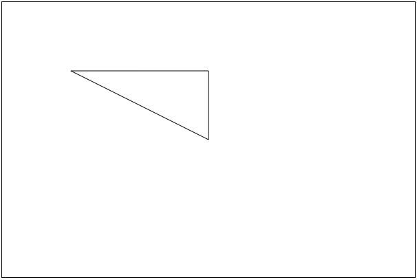
练习: 使用 closePath 改写非零环绕的案例.
路径的概念
- 路径就是一次绘图
- 类比使用油漆刷墙面
- 首先打底色, 绝对不会一次性使用多个色彩
- 一定是先画完某一个色彩再考虑另一个色彩
- 除非需要自己创作才会考虑墙面绘画
- 路径就好比一桶油漆和一把刷子, 一次性描点绘制. 如果重新更换油漆, 那么是绘制另一个区域.
- 如果需要开启新的绘制, 那么使用
CanvasRenderingContext2D.beginPath()方法.
墙面油漆图示
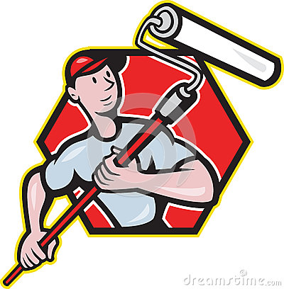
示例
如果需要在一个区域内绘制描边的图形和填充的图形. 例如
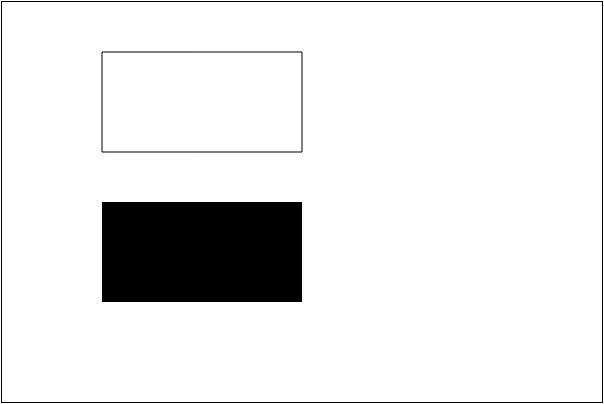
线型相关属性
设置描边与填充不一定只能使用黑色的细线. 可以利用一些属性设置其效果
CanvasRenderingContext2D.lineWidth设置线宽.CanvasRenderingContext2D.lineCap设置线末端类型.CanvasRenderingContext2D.lineJoin设置相交线的拐点.CanvasRenderingContext2D.getLineDash()获得线段样式数组.CanvasRenderingContext2D.setLineDash()设置线段样式.CanvasRenderingContext2D.lineDashOffset绘制线段偏移量.
设置线宽
语法: CanvasRenderingContext2D.lineWidth = number
描述: 设置线宽.
案例
|
|
效果
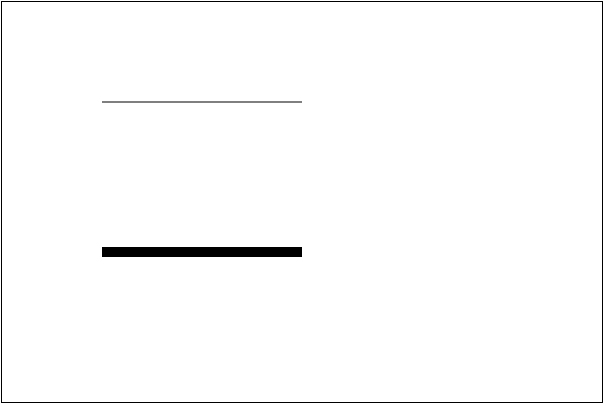
设置线末端类型
语法: CanvasRenderingContext2D.lineCap = value
描述:
- 设置线型末端的样式, 可取值为: ‘butt’( 默认 ), ‘round’, ‘square’.
- ‘butt’ 表示两端使用方形结束.
- ‘round’ 表示两端使用圆角结束.
- ‘square’ 表示突出的圆角结束.
案例
|
|
效果
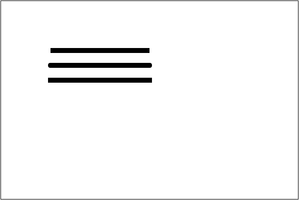
设置相交线的拐点
语法: CanvasRenderingContext2D.lineJoin = value
描述:
- 设置两条直线的拐点描述方式. 可以取值 ‘round’, ‘bevel’, ‘miter’(默认)
- ‘round’ 使用圆角连接.
- ‘bevel’ 使用平切连接.
- ‘miter’ 使用直角转.
案例
|
|
效果
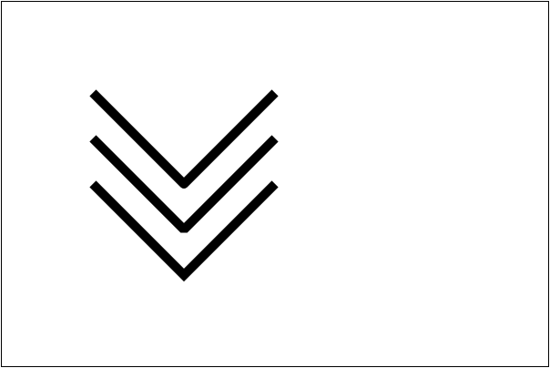
虚线
语法:
CanvasRenderingContext2D.lineDashOffset = numberCanvasRenderingContext2D.getLineDash()CanvasRenderingContext2D.setLineDash()
描述:
- lineDashOffset用于设置开始绘制虚线的偏移量. 数字的正负表示左右偏移.
- getLineDash() 与 setLineDash() 方法使用数组描述实线与虚线的长度.
演示
|
|
效果
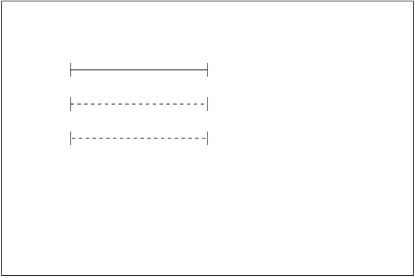
填充与描边样式
语法:
CanvasRenderingContext2D.strokeStyle = valueCanvasRenderingContext2D.fillStyle = value
描述:
- strokeStyle 可以设置描边颜色, 与 CSS 的语法一样
- fillStyle 设置填充颜色, 与 CSS 语法一样
- 这两个属性还可以设置渐变对象.
案例
|
|
效果
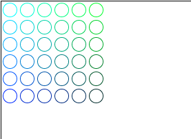
实例练习
绘制坐标网格
绘制下面的效果
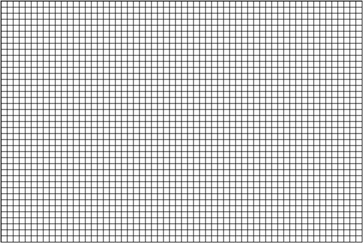
绘制坐标系
绘制下面的效果
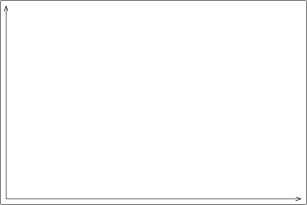
绘制坐标点
绘制下面的效果
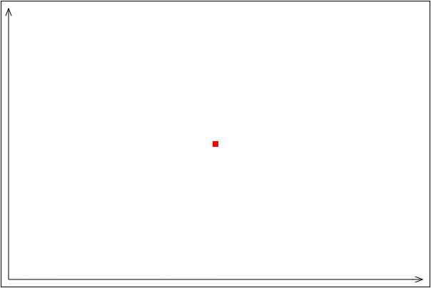
绘制折线图
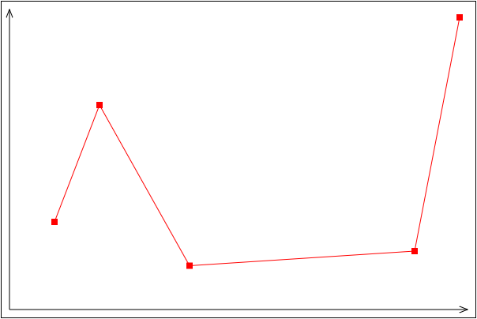